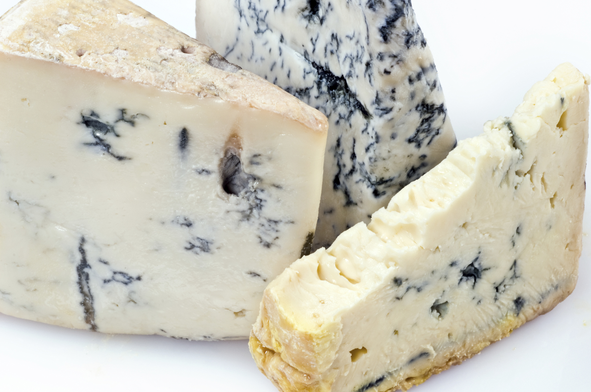

| Gorgonzola (per 100gr) | ||
|---|---|---|
| valori nutrizionali | Energia | 330 kcal (1380 kJ) |
| Proteine | 19 g | |
| grassi | totali | 26 gr |
| carboidrati | totali | 0,1gr |
| minerali | Calcio | 420 mg |
| Fosforo | 360 mg | |
Il gorgonzola è un formaggio erborinato, prodotto in Italia dal latte intero di vacca. Si tratta di un formaggio DOP originario della provincia di Milano e le sue zone di produzioni storiche sono le province di Milano, Como, Pavia e Novara. Quest'ultima ne è diventata nell'ultimo secolo la principale produttrice rendendo il gorgonzola un formaggio con una produzione piemontese del 68%.
Il gorgonzola prende il nome dalla omonima cittadina lombarda che gli ha dato i natali.
Non si conosce con esattezza il periodo della nascita di questo formaggio. Tracce storiche se ne hanno a partire del XV secolo, nella cittadina di Gorgonzola, nei pressi di Milano. Nell'Ottocento la produzione di questo formaggio crebbe sensibilmente e venne esportato, oltre che in altri territori italiani, anche in Inghilterra.
Nel 1996, il formaggio gorgonzola è stato riconosciuto dalla Comunità Europea e registrato nella lista dei prodotti DOP con Reg. Cee n° 1107/96. La forma, del peso di 12 kg circa, riporta su entrambe le facce il marchio di origine e viene avvolta in fogli di alluminio riportanti il contrassegno caratteristico della denominazione protetta "gorgonzola". Cucina
Oltre che essere mangiato "liscio" o spalmato su una fetta di pane, il gorgonzola è ingrediente di molti piatti della cucina lombarda, dal risotto alla pasta alle scaloppine, spesso abbinato con altri formaggi meno piccanti ma più consistenti. È ingrediente praticamente fondamentale della "pasta ai quattro formaggi". Ancora, due classici abbinamenti del gorgonzola crudo, spesso combinati, sono con il mascarpone e le noci.
Il gorgonzola richiede un vino rosso robusto e corposo, ma è stato abbinato anche con morbidi vini bianchi o rosati e, per il tipo piccante, anche con vini da dessert o liquorosi tipo Marsala vergine o Porto. Una classica associazione culinaria, soprattutto in uso nella provincia di Bergamo e nella Provincia di Brescia, è rappresentata da polenta e gorgonzola, da abbinarsi al Moscato di Scanzo (vino rosso moscato prodotto nell'omonimo comune di Scanzorosciate nella provincia di Bergamo).
Per l'ottimale conservazione del gorgonzola è sufficiente asportare la crosta ed avvolgere la fetta in foglio di alluminio, riponendola in una confezione salvafreschezza.